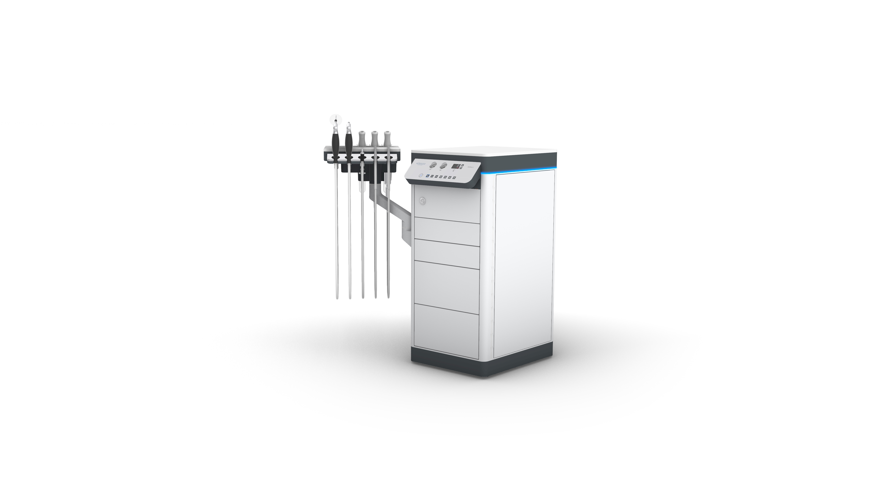

×
MODULA L
MODULA M
CATALOGUE
MODULA L

Changer la couleur
▼
Détails techniques
▼
Dimensions: 120 x 80 x 60 cm
Poids: 85 kg
Puissance: 2000W
Personnaliser ma machine
▼
Éclairage d'instruments LED RGB, avec changement de couleurs RGB (rouge, vert, bleu) incl. télécommande
Plateau d'instruments chauffant, pour le plan des instruments
Tiroir UV, pour le rangement des instruments traités
Double galerie, au-dessus du plan des instruments avec plaque en aluminium pulsée
Galerie, au-dessus du plan des instruments avec plaque en aluminium pulsée
Multiprise pour l'option galerie
Extension de plateau L, plateau de 1152 mm en matériau minéral résistant HI-MACS®
Extension de plateau M, plateau de 985 mm en matériau minéral résistant HI-MACS®
Extension de plateau S, plateau de 500 mm en matériau minéral résistant HI-MACS®
Support de lampe frontale avec aimant, non commuté
Suspension pour lampe frontale à lumière froide, commutation automatique, réglable en hauteur et pivotante
Support de microscope pour microscopes Kaps SOM-22, côté gauche
Support de microscope pour microscopes Kaps SOM-22, côté droit
Bras pivotant pour écran TFT, montage sur l'unité ORL
Bras pivotant pour écran TFT, montage sur la perche du microscope
Bras pivotant avec plateau, dimensions 360 x 280 mm, montage sur l'unité ORL, environ 360 x 280 mm (L x P), max 10 kg
Système d'aspiration avec vidange manuelle du bac à sécrétions, pompe à vide sans huile (40 l/min à -0,85 bar), suspension sans vibrations, commutation automatique lors du retrait du tuyau d'aspiration, filtre à bactéries, bac à sécrétions de 2,0 L (connectable directement), tuyaux antibactériens avec raccords rapides (aucune connexion d'eau requise)
Système d'aspiration 'Sekretomatik', vidange automatique du bac à sécrétions avec rinçage, commutation automatique lors du retrait du tuyau d'aspiration, pompe à vide sans huile (40 l/min à -0,85 bar), suspension sans vibrations, filtre à bactéries, pompe de relevage, valve AquaStop, tuyaux de raccordement, tuyaux antibactériens avec raccords rapides (connexion d'eau requise)
Aspiration avec vidange manuelle du bac à sécrétions, système d'aspiration monodirectionnel MEDELA (aucune connexion d'eau requise)
Aspiration avec vidange manuelle du bac à sécrétions, système d'aspiration monodirectionnel SERRES (aucune connexion d'eau requise)
Sac interne monodose MEDELA avec agent gélifiant, 1,5 L (30 pièces)
Sac interne monodose SERRES avec agent gélifiant, 1,5 L (32 pièces)
Régulateur de vide pour dosage précis, plage de réglage : 0 à 0,85 bar
Tuyau d'aspiration séparé pour l'adaptation du bac à salive/tasse à rinçage auriculaire avec commutation automatique lors du retrait du tuyau d'aspiration
Système de rinçage du tuyau avec nettoyage automatique du tuyau d'aspiration à l'aide de la pression d'eau (connexion d'eau requise)
Système de lavage/rinçage de canule, via un réservoir fixé latéralement à l'unité, avec solution désinfectante
+37° C Système de rinçage auriculaire avec chauffe-eau instantané : affichage digital de la température, poignée de rinçage autoclavable avec canule interchangeable et tuyau antibactérien avec raccord rapide incluant valve AquaStop et tuyaux de raccordement
+37° C Système autonome de rinçage auriculaire : réservoir d'eau externe (2 litres), poignée de rinçage autoclavable avec canule interchangeable et tuyau antibactérien avec raccord rapide ; indépendant du réseau d'eau domestique
Extension vestimentaire, température réglable de +22° à +44°C
Installation pneumatique : compresseur (sans huile, 12 L/min, max. 2,5 bar), réservoir avec filtre à air comprimé autoclavable, embout de soufflerie autoclavable avec tuyau antibactérien à raccord rapide incluant 3 nébuliseurs pour médicaments liquides et support pour flacons pulvérisateurs
Vanne de régulation d'air pour dosage précis
1 source lumineuse à lumière froide, LED haute performance, régulation intégrée, sortie lumineuse remplaçable avec adaptateur STORZ incluant support pour guide de lumière sur le bras pivotant
2 sources lumineuses à lumière froide, LED haute performance, régulation intégrée, sortie lumineuse remplaçable avec adaptateur STORZ incluant support pour guide de lumière sur le bras pivotant
3 sources lumineuses à lumière froide, LED haute performance, régulation intégrée, sortie lumineuse remplaçable avec adaptateur STORZ incluant support pour guide de lumière sur le bras pivotant
Contrôle par capteur pour sources lumineuses LED, allumage automatique lors du retrait du guide de lumière
Source lumineuse LED portative, max 1 000 lm avec connecteur WOLF
Source lumineuse LED portative, max 1 000 lm avec connecteur STORZ
Support pour endoscope pour sinusoscopes, non chauffant, pour le rangement des endoscopes (2,7 mm ou 4,0 mm), longueur max. 200 mm
Support pour endoscope préchauffé pour sinusoscopes, destiné au rangement et au préchauffage des endoscopes (2,7 mm ou 4,0 mm), longueur max. 200 mm
Support pour endoscope pour laryngoscopes, non chauffant, pour le rangement des laryngoscopes (10 mm ou 11 mm), longueur max. 200 mm
Support pour endoscope préchauffé pour laryngoscopes, destiné au rangement et au préchauffage des laryngoscopes (10 mm ou 11 mm), longueur max. 200 mm
3 porte-endoscopes pour endoscopes flexibles avec support, version 4, (profondeur 490 mm, diamètre intérieur 28 mm), support magnétique
1 porte-endoscopes pour endoscopes flexibles avec support, version 4, (profondeur 490 mm), porte-endoscopes en acier inoxydable, diamètre intérieur 28 mm, support magnétique
Adaptateur pour porte-endoscopes en acier inoxydable, pour endoscopes flexibles XION EN-F
Enregistrer ma configuration
Voir le catalogue
×
Vos coordonnées
Nom
Prénom
Email
Suivant
Récapitulatif
Couleur choisie:
Blanc
Options choisies:
Retour
Confirmer
Configuration enregistrée
Merci! Votre configuration a été enregistrée.
Un email récapitulatif vous a été envoyé.
Fermer